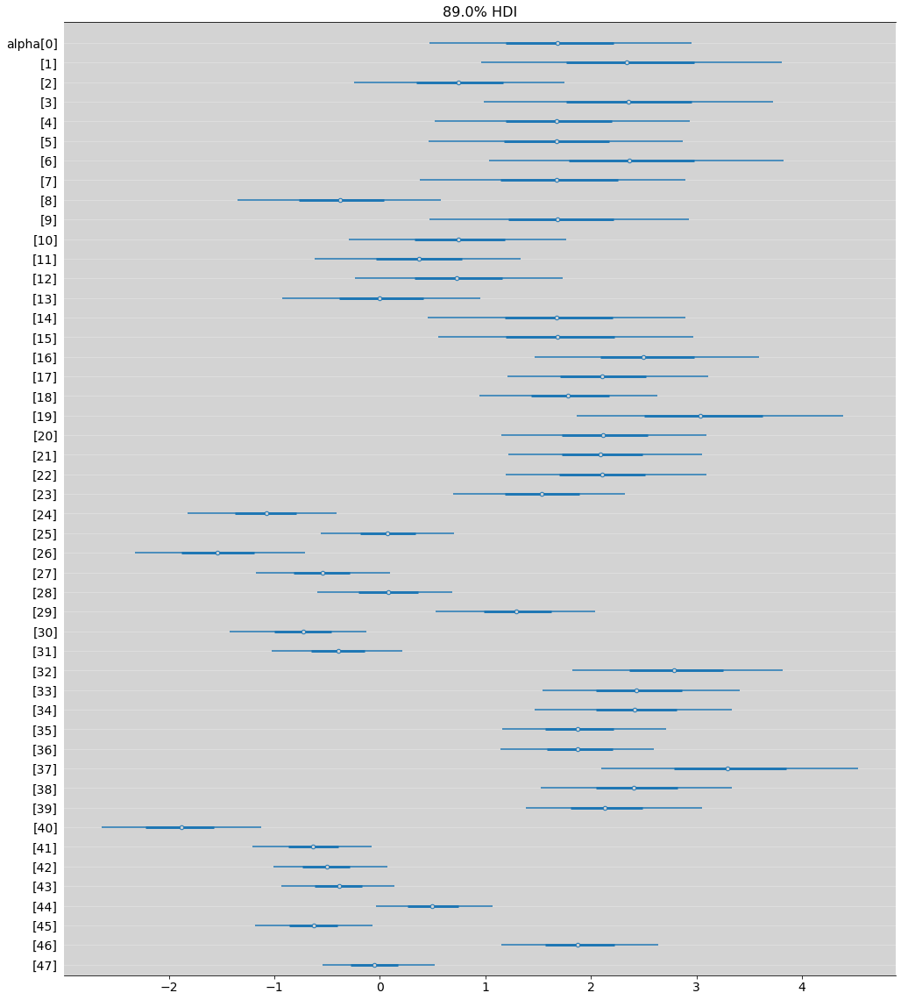
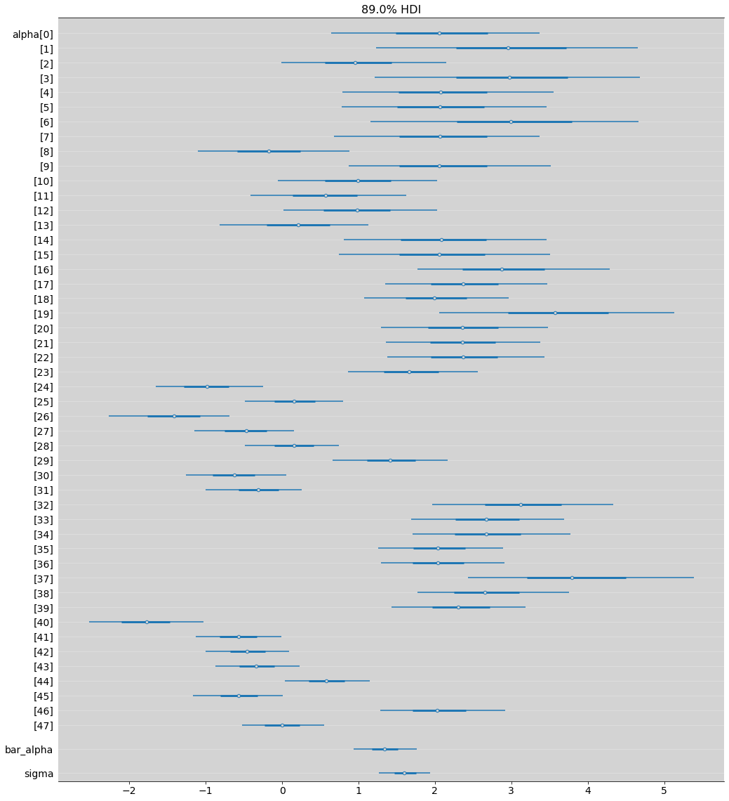
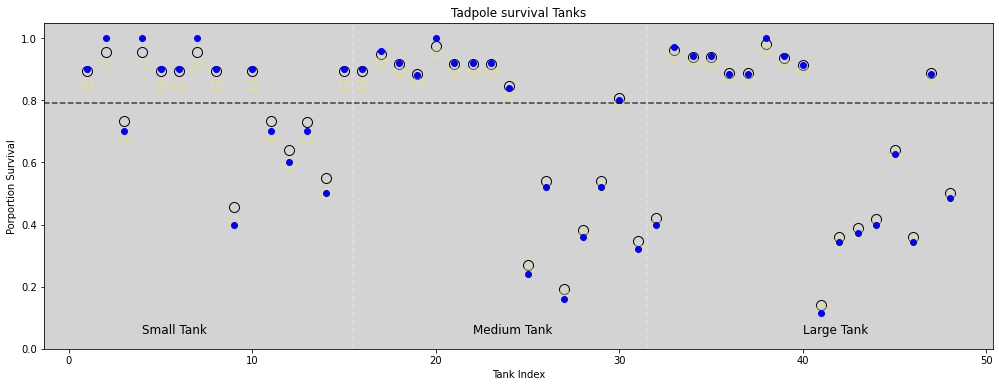
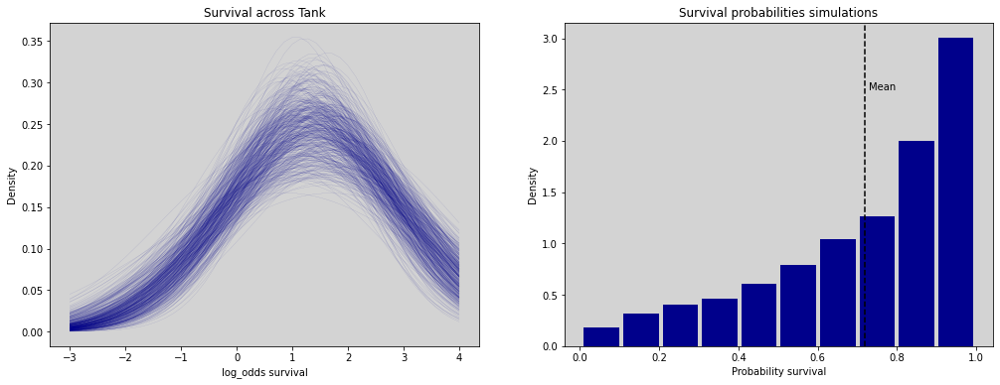
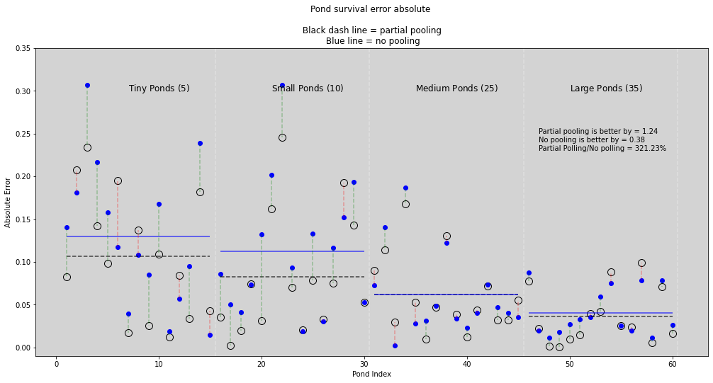
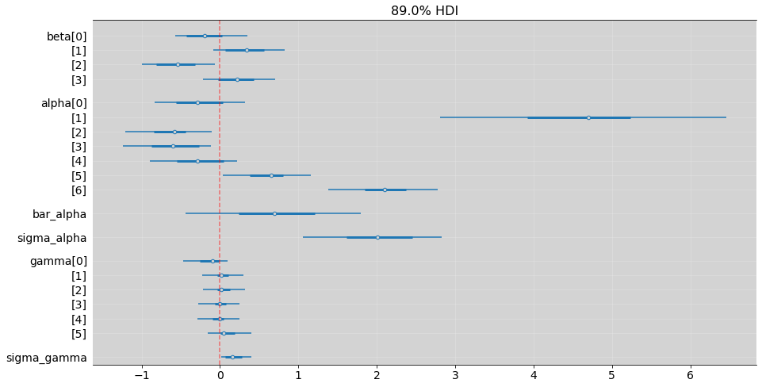
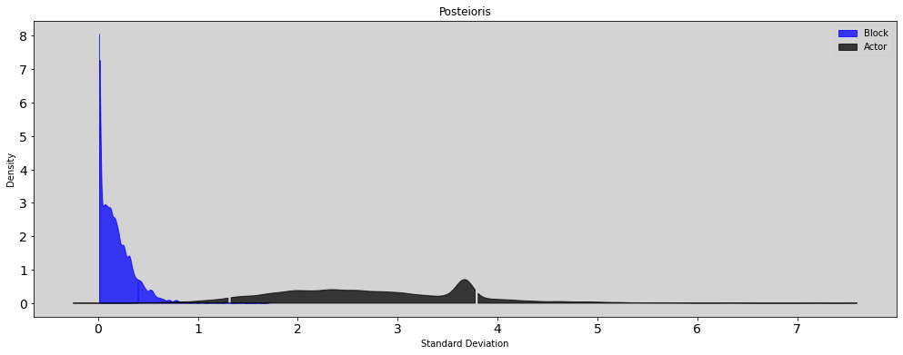
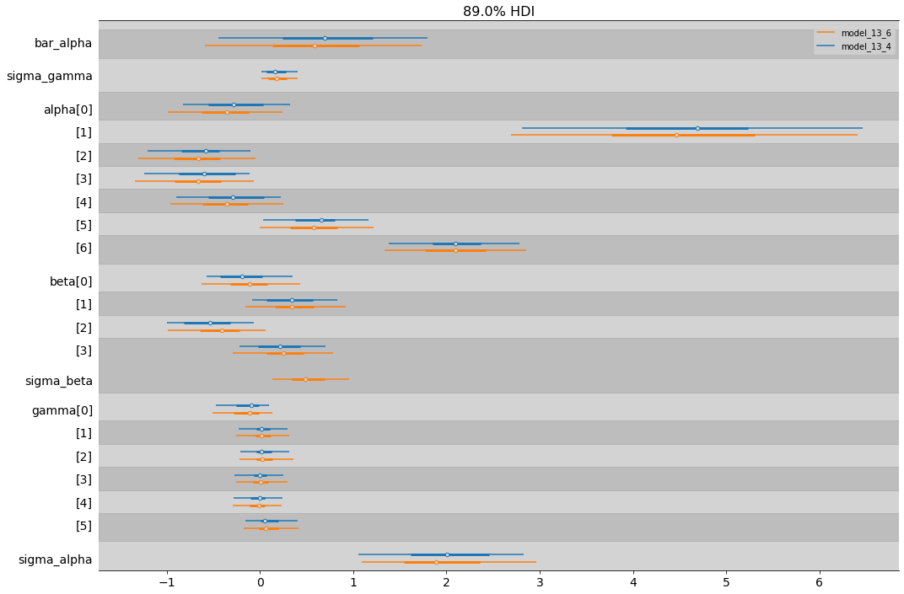
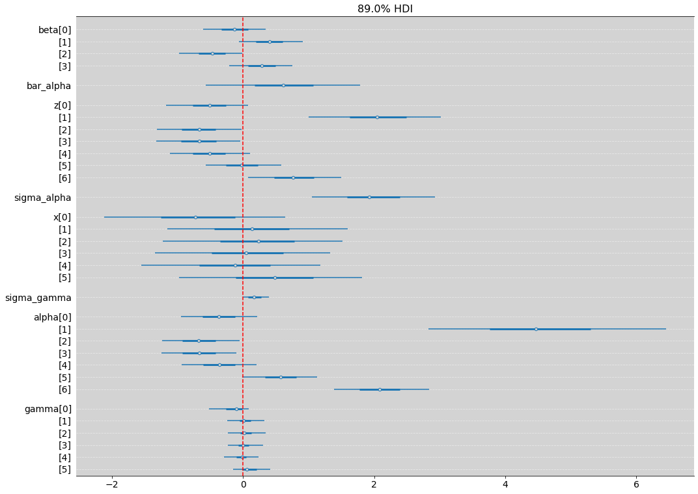
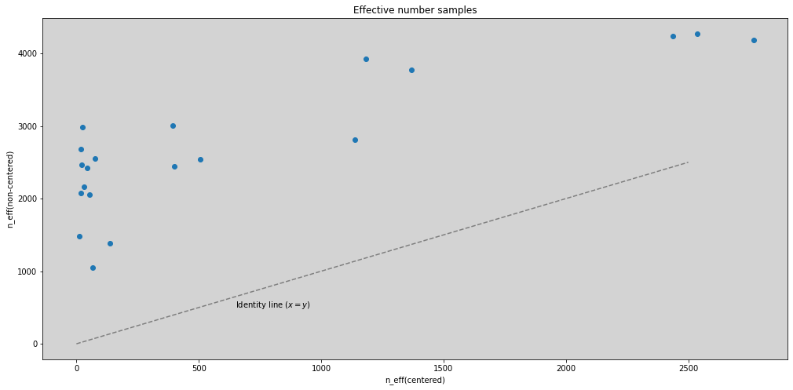

13 - Modelos com Memória¶
Imports, loadings and functions¶
import numpy as np
from scipy import stats
import matplotlib.pyplot as plt
from matplotlib.gridspec import GridSpec
import pandas as pd
import networkx as nx
# from causalgraphicalmodels import CausalGraphicalModel
import arviz as az
# ArviZ ships with style sheets!
# https://python.arviz.org/en/stable/examples/styles.html#example-styles
az.style.use("arviz-darkgrid")
import xarray as xr
import stan
import nest_asyncio
plt.style.use('default')
plt.rcParams['axes.facecolor'] = 'lightgray'
# To DAG's
import daft
# from causalgraphicalmodels import CausalGraphicalModel # Just work in < python3.9
# Add fonts to matplotlib to run xkcd
from matplotlib import font_manager
font_dirs = ["fonts/"] # The path to the custom font file.
font_files = font_manager.findSystemFonts(fontpaths=font_dirs)
for font_file in font_files:
font_manager.fontManager.addfont(font_file)
# To make plots like drawing
# plt.xkcd()
# To running the stan in jupyter notebook
nest_asyncio.apply()
# Utils functions
def logit(p):
return np.log(p) - np.log(1 - p)
def inv_logit(p):
return np.exp(p) / (1 + np.exp(p))
13.1 Example: Multilevel tadpoles¶
R Code 13.1¶
df = pd.read_csv('./data/reedfrogs.csv', sep=";")
df['tank'] = df.index.to_list()
df['tank'] += 1 # index start from 1 like Stan works
df
| density | pred | size | surv | propsurv | tank | |
|---|---|---|---|---|---|---|
| 0 | 10 | no | big | 9 | 0.900000 | 1 |
| 1 | 10 | no | big | 10 | 1.000000 | 2 |
| 2 | 10 | no | big | 7 | 0.700000 | 3 |
| 3 | 10 | no | big | 10 | 1.000000 | 4 |
| 4 | 10 | no | small | 9 | 0.900000 | 5 |
| 5 | 10 | no | small | 9 | 0.900000 | 6 |
| 6 | 10 | no | small | 10 | 1.000000 | 7 |
| 7 | 10 | no | small | 9 | 0.900000 | 8 |
| 8 | 10 | pred | big | 4 | 0.400000 | 9 |
| 9 | 10 | pred | big | 9 | 0.900000 | 10 |
| 10 | 10 | pred | big | 7 | 0.700000 | 11 |
| 11 | 10 | pred | big | 6 | 0.600000 | 12 |
| 12 | 10 | pred | small | 7 | 0.700000 | 13 |
| 13 | 10 | pred | small | 5 | 0.500000 | 14 |
| 14 | 10 | pred | small | 9 | 0.900000 | 15 |
| 15 | 10 | pred | small | 9 | 0.900000 | 16 |
| 16 | 25 | no | big | 24 | 0.960000 | 17 |
| 17 | 25 | no | big | 23 | 0.920000 | 18 |
| 18 | 25 | no | big | 22 | 0.880000 | 19 |
| 19 | 25 | no | big | 25 | 1.000000 | 20 |
| 20 | 25 | no | small | 23 | 0.920000 | 21 |
| 21 | 25 | no | small | 23 | 0.920000 | 22 |
| 22 | 25 | no | small | 23 | 0.920000 | 23 |
| 23 | 25 | no | small | 21 | 0.840000 | 24 |
| 24 | 25 | pred | big | 6 | 0.240000 | 25 |
| 25 | 25 | pred | big | 13 | 0.520000 | 26 |
| 26 | 25 | pred | big | 4 | 0.160000 | 27 |
| 27 | 25 | pred | big | 9 | 0.360000 | 28 |
| 28 | 25 | pred | small | 13 | 0.520000 | 29 |
| 29 | 25 | pred | small | 20 | 0.800000 | 30 |
| 30 | 25 | pred | small | 8 | 0.320000 | 31 |
| 31 | 25 | pred | small | 10 | 0.400000 | 32 |
| 32 | 35 | no | big | 34 | 0.971429 | 33 |
| 33 | 35 | no | big | 33 | 0.942857 | 34 |
| 34 | 35 | no | big | 33 | 0.942857 | 35 |
| 35 | 35 | no | big | 31 | 0.885714 | 36 |
| 36 | 35 | no | small | 31 | 0.885714 | 37 |
| 37 | 35 | no | small | 35 | 1.000000 | 38 |
| 38 | 35 | no | small | 33 | 0.942857 | 39 |
| 39 | 35 | no | small | 32 | 0.914286 | 40 |
| 40 | 35 | pred | big | 4 | 0.114286 | 41 |
| 41 | 35 | pred | big | 12 | 0.342857 | 42 |
| 42 | 35 | pred | big | 13 | 0.371429 | 43 |
| 43 | 35 | pred | big | 14 | 0.400000 | 44 |
| 44 | 35 | pred | small | 22 | 0.628571 | 45 |
| 45 | 35 | pred | small | 12 | 0.342857 | 46 |
| 46 | 35 | pred | small | 31 | 0.885714 | 47 |
| 47 | 35 | pred | small | 17 | 0.485714 | 48 |
df.describe()
| density | surv | propsurv | tank | |
|---|---|---|---|---|
| count | 48.000000 | 48.000000 | 48.000000 | 48.00 |
| mean | 23.333333 | 16.312500 | 0.721607 | 24.50 |
| std | 10.382746 | 9.884775 | 0.266416 | 14.00 |
| min | 10.000000 | 4.000000 | 0.114286 | 1.00 |
| 25% | 10.000000 | 9.000000 | 0.496429 | 12.75 |
| 50% | 25.000000 | 12.500000 | 0.885714 | 24.50 |
| 75% | 35.000000 | 23.000000 | 0.920000 | 36.25 |
| max | 35.000000 | 35.000000 | 1.000000 | 48.00 |
R Code 13.2¶
\[ S_i \sim Binomial(N_i, p_i) \]
\[ logit(p_i) = \alpha_{TANK[i]} \]
\[ \alpha_j \sim Normal(0, 1.5), \mbox{ for } j \in \{1, 48\}\]
model = """
data {
int qty;
array[qty] int N; // Total quantities that have tadpoles in tank
array[qty] int survival; // How many tadpoles survival
array[qty] int tank; // Tank index
}
parameters {
vector[qty] alpha;
}
model {
vector[qty] p;
alpha ~ normal(0, 1.5);
for (i in 1:qty){
p[i] = alpha[ tank[i] ];
p[i] = inv_logit(alpha[i]);
}
survival ~ binomial(N, p);
}
"""
dat_list = {
'qty': len(df),
'tank': df['tank'].to_list(),
'survival': df['surv'].to_list(),
'N': df['density'].to_list()
}
posteriori = stan.build(model, data=dat_list)
samples = posteriori.sample(num_chains=4, num_samples=1000)
model_13_1 = az.from_pystan(
posterior=samples,
posterior_model=posteriori,
observed_data=dat_list.keys()
)
az.summary(model_13_1, hdi_prob=0.89)
| mean | sd | hdi_5.5% | hdi_94.5% | mcse_mean | mcse_sd | ess_bulk | ess_tail | r_hat | |
|---|---|---|---|---|---|---|---|---|---|
| alpha[0] | 1.729 | 0.782 | 0.473 | 2.954 | 0.011 | 0.009 | 5033.0 | 2899.0 | 1.00 |
| alpha[1] | 2.397 | 0.896 | 0.960 | 3.810 | 0.012 | 0.010 | 5933.0 | 2874.0 | 1.00 |
| alpha[2] | 0.761 | 0.627 | -0.247 | 1.749 | 0.008 | 0.008 | 5851.0 | 2858.0 | 1.00 |
| alpha[3] | 2.397 | 0.873 | 0.989 | 3.729 | 0.010 | 0.009 | 7616.0 | 2956.0 | 1.00 |
| alpha[4] | 1.721 | 0.768 | 0.518 | 2.939 | 0.010 | 0.009 | 6444.0 | 2264.0 | 1.00 |
| alpha[5] | 1.697 | 0.751 | 0.465 | 2.871 | 0.009 | 0.008 | 6611.0 | 2922.0 | 1.00 |
| alpha[6] | 2.417 | 0.891 | 1.038 | 3.823 | 0.012 | 0.010 | 6037.0 | 3012.0 | 1.00 |
| alpha[7] | 1.724 | 0.804 | 0.382 | 2.897 | 0.010 | 0.009 | 6642.0 | 2708.0 | 1.00 |
| alpha[8] | -0.369 | 0.616 | -1.348 | 0.580 | 0.009 | 0.009 | 5099.0 | 3129.0 | 1.00 |
| alpha[9] | 1.729 | 0.774 | 0.468 | 2.932 | 0.011 | 0.009 | 5226.0 | 2840.0 | 1.00 |
| alpha[10] | 0.760 | 0.649 | -0.294 | 1.767 | 0.008 | 0.008 | 6808.0 | 2797.0 | 1.00 |
| alpha[11] | 0.374 | 0.618 | -0.615 | 1.336 | 0.008 | 0.009 | 6522.0 | 2646.0 | 1.00 |
| alpha[12] | 0.750 | 0.624 | -0.232 | 1.733 | 0.008 | 0.007 | 6833.0 | 2804.0 | 1.00 |
| alpha[13] | 0.004 | 0.593 | -0.923 | 0.953 | 0.008 | 0.010 | 5845.0 | 2809.0 | 1.00 |
| alpha[14] | 1.721 | 0.780 | 0.457 | 2.893 | 0.011 | 0.009 | 5877.0 | 2668.0 | 1.00 |
| alpha[15] | 1.731 | 0.773 | 0.549 | 2.968 | 0.011 | 0.009 | 5508.0 | 2657.0 | 1.00 |
| alpha[16] | 2.547 | 0.675 | 1.465 | 3.591 | 0.009 | 0.007 | 6075.0 | 2900.0 | 1.00 |
| alpha[17] | 2.141 | 0.606 | 1.210 | 3.112 | 0.009 | 0.007 | 4941.0 | 2607.0 | 1.00 |
| alpha[18] | 1.815 | 0.533 | 0.942 | 2.630 | 0.007 | 0.006 | 5376.0 | 2942.0 | 1.00 |
| alpha[19] | 3.100 | 0.823 | 1.861 | 4.392 | 0.011 | 0.009 | 5902.0 | 2957.0 | 1.00 |
| alpha[20] | 2.149 | 0.619 | 1.147 | 3.097 | 0.010 | 0.008 | 4751.0 | 2430.0 | 1.00 |
| alpha[21] | 2.124 | 0.586 | 1.215 | 3.052 | 0.008 | 0.007 | 5953.0 | 2490.0 | 1.00 |
| alpha[22] | 2.140 | 0.613 | 1.192 | 3.098 | 0.008 | 0.007 | 5610.0 | 2987.0 | 1.00 |
| alpha[23] | 1.551 | 0.523 | 0.695 | 2.324 | 0.007 | 0.006 | 6228.0 | 2590.0 | 1.00 |
| alpha[24] | -1.089 | 0.436 | -1.818 | -0.408 | 0.005 | 0.004 | 7119.0 | 2925.0 | 1.00 |
| alpha[25] | 0.076 | 0.397 | -0.556 | 0.701 | 0.005 | 0.007 | 6264.0 | 2929.0 | 1.00 |
| alpha[26] | -1.548 | 0.505 | -2.323 | -0.709 | 0.007 | 0.005 | 6025.0 | 2769.0 | 1.00 |
| alpha[27] | -0.554 | 0.402 | -1.177 | 0.100 | 0.005 | 0.004 | 6636.0 | 2947.0 | 1.00 |
| alpha[28] | 0.081 | 0.407 | -0.593 | 0.689 | 0.005 | 0.007 | 5490.0 | 2935.0 | 1.00 |
| alpha[29] | 1.310 | 0.480 | 0.532 | 2.039 | 0.006 | 0.005 | 7013.0 | 2854.0 | 1.00 |
| alpha[30] | -0.732 | 0.407 | -1.422 | -0.124 | 0.006 | 0.004 | 5134.0 | 2874.0 | 1.00 |
| alpha[31] | -0.398 | 0.387 | -1.026 | 0.213 | 0.005 | 0.005 | 5524.0 | 2954.0 | 1.00 |
| alpha[32] | 2.831 | 0.651 | 1.827 | 3.820 | 0.009 | 0.007 | 5118.0 | 3261.0 | 1.00 |
| alpha[33] | 2.475 | 0.600 | 1.542 | 3.414 | 0.009 | 0.007 | 5083.0 | 2667.0 | 1.00 |
| alpha[34] | 2.448 | 0.581 | 1.467 | 3.332 | 0.007 | 0.006 | 6680.0 | 2426.0 | 1.00 |
| alpha[35] | 1.905 | 0.481 | 1.161 | 2.714 | 0.006 | 0.005 | 6105.0 | 2837.0 | 1.00 |
| alpha[36] | 1.906 | 0.464 | 1.139 | 2.600 | 0.006 | 0.005 | 6146.0 | 3053.0 | 1.00 |
| alpha[37] | 3.352 | 0.778 | 2.097 | 4.528 | 0.011 | 0.008 | 5970.0 | 2790.0 | 1.00 |
| alpha[38] | 2.445 | 0.583 | 1.524 | 3.334 | 0.008 | 0.006 | 6204.0 | 3449.0 | 1.00 |
| alpha[39] | 2.164 | 0.524 | 1.383 | 3.051 | 0.007 | 0.006 | 6301.0 | 2722.0 | 1.00 |
| alpha[40] | -1.904 | 0.479 | -2.635 | -1.122 | 0.006 | 0.004 | 7453.0 | 2977.0 | 1.00 |
| alpha[41] | -0.637 | 0.355 | -1.205 | -0.078 | 0.004 | 0.004 | 6393.0 | 3005.0 | 1.00 |
| alpha[42] | -0.511 | 0.339 | -1.006 | 0.074 | 0.004 | 0.004 | 5884.0 | 2943.0 | 1.01 |
| alpha[43] | -0.395 | 0.336 | -0.930 | 0.138 | 0.004 | 0.004 | 5973.0 | 2821.0 | 1.00 |
| alpha[44] | 0.507 | 0.347 | -0.033 | 1.068 | 0.004 | 0.004 | 6663.0 | 2982.0 | 1.00 |
| alpha[45] | -0.631 | 0.346 | -1.185 | -0.074 | 0.005 | 0.004 | 5811.0 | 2715.0 | 1.00 |
| alpha[46] | 1.905 | 0.480 | 1.152 | 2.637 | 0.006 | 0.005 | 6090.0 | 2761.0 | 1.00 |
| alpha[47] | -0.053 | 0.334 | -0.546 | 0.523 | 0.004 | 0.006 | 6006.0 | 2621.0 | 1.00 |
az.plot_forest(model_13_1, hdi_prob=0.89, combined=True, figsize=(17, 20))
plt.grid(axis='y', c='white', alpha=0.3)
plt.show()

R Code 13.3¶
Multilevel model Tadpole¶
\[ S_i \sim Binomial(N_i, p_i) \]
\[ logit(p_i) = \alpha_{TANK[i]} \]
\[ \alpha[j] \sim Normal(\bar{\alpha}, \sigma) \mbox{ - [Adaptative prior]} \]
\[ \bar{\alpha} \sim Normal(0, 1.5) \mbox{ - [prior to average tank]} \]
\[ \sigma \sim Exponential(1) \mbox{ - [prior for standard deviation of tanks]} \]
model = """
data {
int qty;
array[qty] int N;
array[qty] int survival;
array[qty] int tank;
}
parameters {
vector[qty] alpha;
real bar_alpha;
real<lower=0> sigma;
}
model {
vector[qty] p;
alpha ~ normal(bar_alpha, sigma);
bar_alpha ~ normal(0, 1.5);
sigma ~ exponential(1);
for (i in 1:qty){
p[i] = alpha[ tank[i] ];
p[i] = inv_logit(p[i]);
}
survival ~ binomial(N, p);
}
"""
dat_list = {
'qty': len(df),
'tank': df['tank'].to_list(),
'survival': df['surv'].to_list(),
'N': df['density'].to_list()
}
posteriori = stan.build(model, data=dat_list)
samples = posteriori.sample(num_chains=4, num_samples=1000)
model_13_2 = az.from_pystan(
posterior=samples,
posterior_model=posteriori,
observed_data=dat_list.keys(),
)
az.summary(model_13_2, hdi_prob=0.89)
| mean | sd | hdi_5.5% | hdi_94.5% | mcse_mean | mcse_sd | ess_bulk | ess_tail | r_hat | |
|---|---|---|---|---|---|---|---|---|---|
| alpha[0] | 2.120 | 0.878 | 0.638 | 3.364 | 0.013 | 0.011 | 5103.0 | 2774.0 | 1.0 |
| alpha[1] | 3.042 | 1.090 | 1.234 | 4.649 | 0.017 | 0.013 | 4432.0 | 3020.0 | 1.0 |
| alpha[2] | 1.012 | 0.678 | -0.009 | 2.145 | 0.009 | 0.008 | 5420.0 | 2781.0 | 1.0 |
| alpha[3] | 3.067 | 1.134 | 1.212 | 4.680 | 0.020 | 0.017 | 3701.0 | 2066.0 | 1.0 |
| alpha[4] | 2.143 | 0.887 | 0.787 | 3.555 | 0.013 | 0.011 | 5244.0 | 2510.0 | 1.0 |
| alpha[5] | 2.122 | 0.864 | 0.782 | 3.457 | 0.012 | 0.010 | 5285.0 | 2885.0 | 1.0 |
| alpha[6] | 3.076 | 1.122 | 1.159 | 4.666 | 0.017 | 0.014 | 5095.0 | 2384.0 | 1.0 |
| alpha[7] | 2.134 | 0.871 | 0.681 | 3.370 | 0.013 | 0.010 | 4979.0 | 2943.0 | 1.0 |
| alpha[8] | -0.176 | 0.624 | -1.097 | 0.884 | 0.009 | 0.010 | 4791.0 | 2630.0 | 1.0 |
| alpha[9] | 2.131 | 0.856 | 0.870 | 3.516 | 0.012 | 0.010 | 5257.0 | 2688.0 | 1.0 |
| alpha[10] | 1.009 | 0.657 | -0.059 | 2.031 | 0.009 | 0.008 | 5011.0 | 2379.0 | 1.0 |
| alpha[11] | 0.578 | 0.643 | -0.410 | 1.625 | 0.009 | 0.008 | 5160.0 | 3014.0 | 1.0 |
| alpha[12] | 1.002 | 0.643 | 0.018 | 2.031 | 0.009 | 0.007 | 5615.0 | 3058.0 | 1.0 |
| alpha[13] | 0.205 | 0.619 | -0.818 | 1.132 | 0.008 | 0.010 | 5383.0 | 2795.0 | 1.0 |
| alpha[14] | 2.144 | 0.850 | 0.811 | 3.456 | 0.013 | 0.011 | 4588.0 | 2692.0 | 1.0 |
| alpha[15] | 2.130 | 0.888 | 0.742 | 3.503 | 0.013 | 0.011 | 5481.0 | 2815.0 | 1.0 |
| alpha[16] | 2.930 | 0.808 | 1.772 | 4.282 | 0.012 | 0.009 | 5486.0 | 2837.0 | 1.0 |
| alpha[17] | 2.414 | 0.673 | 1.351 | 3.467 | 0.010 | 0.008 | 4980.0 | 2624.0 | 1.0 |
| alpha[18] | 2.029 | 0.596 | 1.078 | 2.965 | 0.010 | 0.008 | 3769.0 | 2496.0 | 1.0 |
| alpha[19] | 3.668 | 0.998 | 2.060 | 5.129 | 0.015 | 0.012 | 4742.0 | 2956.0 | 1.0 |
| alpha[20] | 2.401 | 0.696 | 1.294 | 3.475 | 0.010 | 0.008 | 5393.0 | 2721.0 | 1.0 |
| alpha[21] | 2.400 | 0.652 | 1.354 | 3.378 | 0.010 | 0.008 | 4742.0 | 2220.0 | 1.0 |
| alpha[22] | 2.402 | 0.657 | 1.379 | 3.436 | 0.011 | 0.008 | 4170.0 | 2524.0 | 1.0 |
| alpha[23] | 1.705 | 0.540 | 0.862 | 2.557 | 0.008 | 0.006 | 4555.0 | 2817.0 | 1.0 |
| alpha[24] | -0.999 | 0.449 | -1.655 | -0.244 | 0.006 | 0.005 | 5423.0 | 2412.0 | 1.0 |
| alpha[25] | 0.163 | 0.400 | -0.491 | 0.800 | 0.005 | 0.006 | 5549.0 | 2698.0 | 1.0 |
| alpha[26] | -1.429 | 0.503 | -2.269 | -0.687 | 0.008 | 0.006 | 4286.0 | 2894.0 | 1.0 |
| alpha[27] | -0.483 | 0.410 | -1.148 | 0.160 | 0.006 | 0.005 | 5325.0 | 3363.0 | 1.0 |
| alpha[28] | 0.157 | 0.388 | -0.489 | 0.743 | 0.006 | 0.005 | 4797.0 | 2966.0 | 1.0 |
| alpha[29] | 1.438 | 0.479 | 0.657 | 2.166 | 0.006 | 0.005 | 5631.0 | 3250.0 | 1.0 |
| alpha[30] | -0.637 | 0.412 | -1.259 | 0.053 | 0.006 | 0.005 | 5600.0 | 2739.0 | 1.0 |
| alpha[31] | -0.317 | 0.395 | -1.002 | 0.256 | 0.006 | 0.006 | 5105.0 | 2842.0 | 1.0 |
| alpha[32] | 3.188 | 0.771 | 1.963 | 4.334 | 0.012 | 0.009 | 4968.0 | 2644.0 | 1.0 |
| alpha[33] | 2.714 | 0.639 | 1.685 | 3.693 | 0.009 | 0.007 | 4885.0 | 3002.0 | 1.0 |
| alpha[34] | 2.715 | 0.657 | 1.705 | 3.773 | 0.010 | 0.008 | 4591.0 | 2027.0 | 1.0 |
| alpha[35] | 2.072 | 0.519 | 1.255 | 2.887 | 0.008 | 0.006 | 4743.0 | 2557.0 | 1.0 |
| alpha[36] | 2.061 | 0.514 | 1.291 | 2.909 | 0.008 | 0.006 | 4889.0 | 2645.0 | 1.0 |
| alpha[37] | 3.893 | 0.955 | 2.436 | 5.387 | 0.015 | 0.012 | 4467.0 | 2872.0 | 1.0 |
| alpha[38] | 2.702 | 0.641 | 1.767 | 3.752 | 0.010 | 0.008 | 4560.0 | 2247.0 | 1.0 |
| alpha[39] | 2.354 | 0.562 | 1.433 | 3.187 | 0.009 | 0.007 | 4042.0 | 2801.0 | 1.0 |
| alpha[40] | -1.799 | 0.474 | -2.528 | -1.032 | 0.007 | 0.005 | 4750.0 | 2938.0 | 1.0 |
| alpha[41] | -0.573 | 0.355 | -1.133 | -0.006 | 0.005 | 0.004 | 4697.0 | 2564.0 | 1.0 |
| alpha[42] | -0.456 | 0.345 | -1.001 | 0.096 | 0.005 | 0.004 | 5231.0 | 3157.0 | 1.0 |
| alpha[43] | -0.334 | 0.343 | -0.872 | 0.226 | 0.005 | 0.004 | 4927.0 | 3032.0 | 1.0 |
| alpha[44] | 0.582 | 0.345 | 0.041 | 1.143 | 0.005 | 0.004 | 4770.0 | 3146.0 | 1.0 |
| alpha[45] | -0.573 | 0.366 | -1.163 | 0.008 | 0.005 | 0.004 | 5334.0 | 3158.0 | 1.0 |
| alpha[46] | 2.069 | 0.522 | 1.285 | 2.919 | 0.008 | 0.006 | 4822.0 | 2614.0 | 1.0 |
| alpha[47] | -0.000 | 0.340 | -0.524 | 0.552 | 0.005 | 0.006 | 5063.0 | 2720.0 | 1.0 |
| bar_alpha | 1.346 | 0.260 | 0.940 | 1.758 | 0.005 | 0.003 | 3131.0 | 2923.0 | 1.0 |
| sigma | 1.618 | 0.216 | 1.263 | 1.940 | 0.004 | 0.003 | 2491.0 | 3083.0 | 1.0 |
az.plot_forest(model_13_2, hdi_prob=0.89, combined=True, figsize=(17, 20))
plt.grid(axis='y', color='white', alpha=0.3)
plt.show()

R Code 13.4¶
# az.compare(model_13_1, model_13_2)
R Code 13.5¶
means = [ model_13_2.posterior.alpha.sel(alpha_dim_0=(i-1)).values.flatten().mean() for i in df.tank ]
means = inv_logit(means)
# My test, this is not originaly in book
means_13_1 = [ model_13_1.posterior.alpha.sel(alpha_dim_0=(i-1)).values.flatten().mean() for i in df.tank ]
means_13_1 = inv_logit(means_13_1)
bar_alpha_log = model_13_2.posterior.bar_alpha.values.flatten()
bar_alpha = inv_logit(bar_alpha_log)
bar_alpha_mean = bar_alpha.mean()
sigma_log = model_13_2.posterior.sigma.values.flatten()
sigma = inv_logit(sigma_log)
sigma_mean = sigma.mean()
plt.figure(figsize=(17, 6))
plt.ylim = ([0, 1])
plt.scatter(df.tank, means, edgecolors='black', c='lightgray', s=100)
plt.scatter(df.tank, means_13_1, edgecolors='yellow', c='lightgray', s=100, alpha=0.4)
plt.scatter(df.tank, df.propsurv, c='blue')
plt.axvline(x=15.5, ls='--', color='white', alpha=0.3)
plt.axvline(x=31.5, ls='--', color='white', alpha=0.3)
plt.axhline(y=bar_alpha_mean, ls='--', c='black', alpha=0.7)
plt.text(4, 0.05, 'Small Tank', size=12)
plt.text(22, 0.05, 'Medium Tank', size=12)
plt.text(40, 0.05, 'Large Tank', size=12)
plt.gca().set_ylim(0.0, 1.05)
plt.title('Tadpole survival Tanks')
plt.xlabel('Tank Index')
plt.ylabel('Porportion Survival')
plt.show()

Blue dot: Proportion survival s_i/N_i
Black circle: Multilevel model estimative
Light Yellow: No-pooling estimative
R Code 13.6¶
fig = plt.figure(figsize=(17, 6))
gs = GridSpec(1, 2)
x = np.linspace(-3, 4)
s_sampled = 500
ax1 = fig.add_subplot(gs[0, 0])
log_odds_survival = []
log_odds_sampled_index = np.random.choice(len(bar_alpha_log) ,size=s_sampled, replace=False)
for i in log_odds_sampled_index:
log_odds_survival.append(stats.norm.pdf(x, bar_alpha_log[i], sigma_log[i]))
for i in range(s_sampled):
ax1.plot(x, log_odds_survival[i], c='darkblue', linewidth=0.05)
ax1.set_title('Survival across Tank')
ax1.set_xlabel('log_odds survival')
ax1.set_ylabel('Density')
ax2 = fig.add_subplot(gs[0, 1])
samples_log = np.random.normal(bar_alpha_log, sigma_log)
ax2.hist(inv_logit(samples_log), rwidth=0.9, color='darkblue', density=True)
ax2.axvline(x=np.mean(inv_logit(samples_log)), c='black', ls='--')
ax2.text(np.mean(inv_logit(samples_log))+0.01, 2.5, 'Mean')
ax2.set_title('Survival probabilities simulations')
ax2.set_xlabel('Probability survival')
ax2.set_ylabel('Density')
plt.show()

13.2 Varing effects and underfitting/overfitting trade-off¶
The model
\[ S_i \sim Binomial(N_i, p_i) \]
\[ logit(p_i) = \alpha_{POND[i]} \]
\[ \alpha_j \sim Normal(\bar{\alpha}, \sigma) \]
\[ \bar{\alpha} \sim Normal(0, 1.5) \]
\[ \sigma \sim Exponential(1) \]
\(\bar{\alpha} := \) the avegare log-oods fo survival in the entire population of ponds
\(\sigma := \) the standard deviation of the distribution of log-oods of survivial among ponds
\(\alpha := \) a vector of individual pond intercepts, one for each pond
R Code 13.7¶
a_bar = 1.5
sigma = 1.5
nponds = 60
repeats = 15
Ni = np.repeat([5, 10, 25, 35], repeats=repeats)
R Code 13.8¶
a_pond = np.random.normal(loc=a_bar, scale=sigma, size=nponds)
R Code 13.9¶
d = {
'pond': np.arange(nponds) + 1,
'Ni':Ni,
'true_a': a_pond,
}
dsim = pd.DataFrame(data=d)
dsim.head()
| pond | Ni | true_a | |
|---|---|---|---|
| 0 | 1 | 5 | 1.812547 |
| 1 | 2 | 5 | 0.484266 |
| 2 | 3 | 5 | 2.273773 |
| 3 | 4 | 5 | 1.495332 |
| 4 | 5 | 5 | 1.674099 |
R Code 13.10¶
# Code in R -> integer vs numeric
R Code 13.11¶
dsim['Si'] = np.random.binomial(n=dsim['Ni'], p=inv_logit(dsim['true_a']))
dsim.head()
| pond | Ni | true_a | Si | |
|---|---|---|---|---|
| 0 | 1 | 5 | 1.812547 | 5 |
| 1 | 2 | 5 | 0.484266 | 4 |
| 2 | 3 | 5 | 2.273773 | 3 |
| 3 | 4 | 5 | 1.495332 | 3 |
| 4 | 5 | 5 | 1.674099 | 5 |
R Code 13.12¶
13.2.4 Compute the no-pooling estimates¶
dsim['p_nopool'] = dsim['Si'] / dsim['Ni']
dsim.head()
| pond | Ni | true_a | Si | p_nopool | |
|---|---|---|---|---|---|
| 0 | 1 | 5 | 1.812547 | 5 | 1.0 |
| 1 | 2 | 5 | 0.484266 | 4 | 0.8 |
| 2 | 3 | 5 | 2.273773 | 3 | 0.6 |
| 3 | 4 | 5 | 1.495332 | 3 | 0.6 |
| 4 | 5 | 5 | 1.674099 | 5 | 1.0 |
R Code 13.13¶
13.2.5 Compute the partial-pooling estimates¶
model = """
data {
int N;
array[N] int pond; // Pond index
array[N] int Ni; // Population in pond[i]
array[N] int Si; // Survivals from Ni pond
}
parameters {
vector[N] alpha;
real bar_alpha;
real<lower=0> sigma;
}
model {
vector[N] pi;
// Link
for (i in 1:N) {
pi[i] = alpha[ pond[i] ];
pi[i] = inv_logit(pi[i]);
}
// Prior
alpha ~ normal(bar_alpha, sigma);
// Hyper Prior
bar_alpha ~ normal(0, 1.5);
sigma ~ exponential(1);
// Likelihood
Si ~ binomial(Ni, pi);
}
"""
dat_list = {
'N': len(dsim),
'Ni': dsim['Ni'].to_list(),
'pond': dsim['pond'].to_list(),
'Si': dsim['Si'].to_list(),
}
posteriori = stan.build(model, data=dat_list)
samples = posteriori.sample(num_chains=4, num_samples=1000)
R Code 13.14¶
model_13_3 = az.from_pystan(
posterior=samples,
posterior_model=posteriori,
observed_data=dat_list
)
az.summary(model_13_3, hdi_prob=0.89)
| mean | sd | hdi_5.5% | hdi_94.5% | mcse_mean | mcse_sd | ess_bulk | ess_tail | r_hat | |
|---|---|---|---|---|---|---|---|---|---|
| alpha[0] | 2.787 | 1.241 | 0.919 | 4.799 | 0.019 | 0.016 | 4867.0 | 2442.0 | 1.0 |
| alpha[1] | 1.562 | 0.969 | -0.034 | 3.021 | 0.014 | 0.012 | 5222.0 | 2609.0 | 1.0 |
| alpha[2] | 0.721 | 0.865 | -0.728 | 2.038 | 0.012 | 0.012 | 5554.0 | 2651.0 | 1.0 |
| alpha[3] | 0.728 | 0.854 | -0.587 | 2.118 | 0.013 | 0.012 | 4619.0 | 2732.0 | 1.0 |
| alpha[4] | 2.759 | 1.252 | 0.761 | 4.686 | 0.019 | 0.015 | 4595.0 | 2736.0 | 1.0 |
| ... | ... | ... | ... | ... | ... | ... | ... | ... | ... |
| alpha[57] | 4.017 | 1.033 | 2.446 | 5.569 | 0.017 | 0.014 | 4304.0 | 2100.0 | 1.0 |
| alpha[58] | 1.430 | 0.410 | 0.782 | 2.105 | 0.006 | 0.004 | 5454.0 | 3090.0 | 1.0 |
| alpha[59] | 1.115 | 0.384 | 0.451 | 1.690 | 0.005 | 0.004 | 5327.0 | 3270.0 | 1.0 |
| bar_alpha | 1.442 | 0.254 | 1.026 | 1.835 | 0.004 | 0.003 | 3741.0 | 2961.0 | 1.0 |
| sigma | 1.700 | 0.236 | 1.320 | 2.046 | 0.006 | 0.004 | 1522.0 | 2025.0 | 1.0 |
62 rows × 9 columns
R Code 13.15¶
dsim['p_partpool'] = [inv_logit(model_13_3.posterior.alpha.sel(alpha_dim_0=i).values.mean()) for i in range(len(dsim))]
dsim.head()
| pond | Ni | true_a | Si | p_nopool | p_partpool | |
|---|---|---|---|---|---|---|
| 0 | 1 | 5 | 1.812547 | 5 | 1.0 | 0.941987 |
| 1 | 2 | 5 | 0.484266 | 4 | 0.8 | 0.826685 |
| 2 | 3 | 5 | 2.273773 | 3 | 0.6 | 0.672823 |
| 3 | 4 | 5 | 1.495332 | 3 | 0.6 | 0.674364 |
| 4 | 5 | 5 | 1.674099 | 5 | 1.0 | 0.940440 |
R Code 13.16¶
dsim['p_true'] = inv_logit(dsim['true_a'])
dsim.head()
| pond | Ni | true_a | Si | p_nopool | p_partpool | p_true | |
|---|---|---|---|---|---|---|---|
| 0 | 1 | 5 | 1.812547 | 5 | 1.0 | 0.941987 | 0.859669 |
| 1 | 2 | 5 | 0.484266 | 4 | 0.8 | 0.826685 | 0.618755 |
| 2 | 3 | 5 | 2.273773 | 3 | 0.6 | 0.672823 | 0.906681 |
| 3 | 4 | 5 | 1.495332 | 3 | 0.6 | 0.674364 | 0.816877 |
| 4 | 5 | 5 | 1.674099 | 5 | 1.0 | 0.940440 | 0.842122 |
R Code 13.17¶
no_pool_error = np.abs(dsim['p_nopool'] - dsim['p_true'])
partpool_error = np.abs(dsim['p_partpool'] - dsim['p_true'])
R Code 13.18¶
plt.figure(figsize=(17, 8))
plt.ylim = ([0, 1])
max_lim_graph = 0.3
plt.scatter(dsim.pond, partpool_error, edgecolors='black', c='lightgray', s=100)
plt.scatter(dsim.pond, no_pool_error, c='blue')
qty_unique_ponds = len(dsim['Ni'].unique())
qty_each_ponds = repeats # The number of repetitions for each element in each pond.
# Vertical lines
for i in range(qty_unique_ponds):
plt.axvline(x=qty_each_ponds*(i+1) + 0.5, ls='--', color='white', alpha=0.3)
partpool_error_mean = np.mean(partpool_error[(qty_each_ponds*i):(qty_each_ponds*(i+1))])
no_pool_error_mean = np.mean(no_pool_error[(qty_each_ponds*i):(qty_each_ponds*(i+1))])
plt.hlines(y=partpool_error_mean, xmin=1+(qty_each_ponds*i), xmax=qty_each_ponds+(qty_each_ponds*i), ls='--', colors='black', alpha=0.7)
plt.hlines(y=no_pool_error_mean, xmin=1+(qty_each_ponds*i), xmax=qty_each_ponds+(qty_each_ponds*i), ls='-', colors='blue', alpha=0.7)
score_no_pooling = 0
score_partial_pooling = 0
for i in dsim.pond:
if no_pool_error[i-1] >= partpool_error[i-1]: # partial polling is better
plt.vlines(x=i, ymin=no_pool_error[i-1], ymax=partpool_error[i-1], ls='--', colors='green', alpha=0.3)
score_partial_pooling += no_pool_error[i-1] - partpool_error[i-1] # How partial pooling is better
else: # no pooling is better
plt.vlines(x=i, ymin=no_pool_error[i-1], ymax=partpool_error[i-1], ls='--', colors='red', alpha=0.3)
score_no_pooling += partpool_error[i-1] - no_pool_error[i-1] # How no pooling is better
plt.text(7, max_lim_graph, 'Tiny Ponds ($5$)', size=12)
plt.text(21, max_lim_graph, 'Small Ponds ($10$)', size=12)
plt.text(35, max_lim_graph, 'Medium Ponds ($25$)', size=12)
plt.text(50, max_lim_graph, 'Large Ponds ($35$)', size=12)
plt.text(47, 0.25, f'Partial pooling is better by = {round(score_partial_pooling, 2)}')
plt.text(47, 0.24, f'No pooling is better by = {round(score_no_pooling, 2)}')
plt.text(47, 0.23, f'Partial Polling/No polling = {round((score_partial_pooling/score_no_pooling)*100, 2)}%')
plt.gca().set_ylim(-0.01, max_lim_graph + 0.05)
plt.title('Pond survival error absolute \n\n Black dash line = partial pooling \n Blue line = no pooling')
plt.xlabel('Pond Index')
plt.ylabel('Absolute Error')
plt.show()

R Code 13.20¶
# Reuse code in using Rethinking packages in R, here is automatically reuse!
# Just re-run from R Code 13.7
13.3 More than one type of cluster¶
Multilevel Chimpanzees¶
\[ L_i \sim Binomial(1, p_i) \]
\[ logit(p_i) = \alpha_{ACTOR[i]} + \gamma_{BLOCK[i]} + \beta_{TREATMENT[i]} \]
\[ \beta_j \sim Normal(0, 0.5) \mbox{ , } j \in \{1, ... ,4\} \]
\[ \alpha_j \sim Normal(\bar{\alpha}, \sigma_\alpha) \mbox{ , } j \in \{1, ... ,7\} \]
\[ \gamma_j \sim Normal(0, \sigma_\gamma) \mbox{ , } j \in \{1, ... ,6\} \]
\[ \bar{\alpha} \sim Normal(0, 1.5) \]
\[ \sigma_{\alpha} \sim Exponential(1) \]
\[ \sigma_{\gamma} \sim Exponential(1) \]
R Code 13.21¶
# Previous chimpanzees models is in chapter 11
df = pd.read_csv('./data/chimpanzees.csv', sep=';')
df.head()
| actor | recipient | condition | block | trial | prosoc_left | chose_prosoc | pulled_left | |
|---|---|---|---|---|---|---|---|---|
| 0 | 1 | NaN | 0 | 1 | 2 | 0 | 1 | 0 |
| 1 | 1 | NaN | 0 | 1 | 4 | 0 | 0 | 1 |
| 2 | 1 | NaN | 0 | 1 | 6 | 1 | 0 | 0 |
| 3 | 1 | NaN | 0 | 1 | 8 | 0 | 1 | 0 |
| 4 | 1 | NaN | 0 | 1 | 10 | 1 | 1 | 1 |
df['treatment'] = 1 + df['prosoc_left'] + 2 * df['condition']
df.head()
| actor | recipient | condition | block | trial | prosoc_left | chose_prosoc | pulled_left | treatment | |
|---|---|---|---|---|---|---|---|---|---|
| 0 | 1 | NaN | 0 | 1 | 2 | 0 | 1 | 0 | 1 |
| 1 | 1 | NaN | 0 | 1 | 4 | 0 | 0 | 1 | 1 |
| 2 | 1 | NaN | 0 | 1 | 6 | 1 | 0 | 0 | 2 |
| 3 | 1 | NaN | 0 | 1 | 8 | 0 | 1 | 0 | 1 |
| 4 | 1 | NaN | 0 | 1 | 10 | 1 | 1 | 1 | 2 |
model = """
data {
int N;
int qty_chimpanzees;
int qty_blocks;
int qty_treatments;
array[N] int pulled_left;
array[N] int actor;
array[N] int block;
array[N] int treatment;
}
parameters {
vector[qty_treatments] beta;
vector[qty_chimpanzees] alpha;
real bar_alpha;
real<lower=0> sigma_alpha;
vector[qty_blocks] gamma;
real<lower=0> sigma_gamma;
}
model {
vector[N] p;
// priors
beta ~ normal(0, 0.5);
alpha ~ normal(bar_alpha, sigma_alpha);
bar_alpha ~ normal(0, 1.5);
sigma_alpha ~ exponential(1);
gamma ~ normal(0, sigma_gamma);
sigma_gamma ~ exponential(1);
// link
for (i in 1:N){
p[i] = alpha[ actor[i] ] + gamma[ block[i] ] + beta[ treatment[i] ];
p[i] = inv_logit(p[i]);
}
// linkelihood
pulled_left ~ binomial(1, p);
}
"""
dat_list = df[['pulled_left', 'actor', 'block', 'treatment']].to_dict('list')
dat_list['N'] = len(df)
dat_list['qty_chimpanzees'] = len(df['actor'].unique())
dat_list['qty_blocks'] = len(df['block'].unique())
dat_list['qty_treatments'] = len(df['treatment'].unique())
posteriori = stan.build(model, data=dat_list)
samples = posteriori.sample(num_chains=4, num_samples=1000)
R Code 13.22¶
model_13_4 = az.from_pystan(
posterior=samples,
posterior_model=posteriori,
observed_data=dat_list
)
az.summary(model_13_4, hdi_prob=0.89)
| mean | sd | hdi_5.5% | hdi_94.5% | mcse_mean | mcse_sd | ess_bulk | ess_tail | r_hat | |
|---|---|---|---|---|---|---|---|---|---|
| beta[0] | -0.178 | 0.296 | -0.569 | 0.352 | 0.042 | 0.030 | 54.0 | 1029.0 | 1.06 |
| beta[1] | 0.332 | 0.321 | -0.083 | 0.828 | 0.077 | 0.056 | 20.0 | 1608.0 | 1.14 |
| beta[2] | -0.537 | 0.308 | -0.994 | -0.069 | 0.059 | 0.043 | 31.0 | 1329.0 | 1.09 |
| beta[3] | 0.232 | 0.297 | -0.221 | 0.702 | 0.046 | 0.033 | 45.0 | 1159.0 | 1.06 |
| alpha[0] | -0.263 | 0.405 | -0.829 | 0.320 | 0.106 | 0.077 | 17.0 | 1605.0 | 1.17 |
| alpha[1] | 4.763 | 1.249 | 2.811 | 6.460 | 0.035 | 0.025 | 1182.0 | 1293.0 | 1.03 |
| alpha[2] | -0.624 | 0.347 | -1.205 | -0.104 | 0.021 | 0.024 | 400.0 | 1396.0 | 1.03 |
| alpha[3] | -0.588 | 0.393 | -1.237 | -0.112 | 0.085 | 0.061 | 24.0 | 1595.0 | 1.12 |
| alpha[4] | -0.275 | 0.387 | -0.899 | 0.220 | 0.092 | 0.066 | 20.0 | 860.0 | 1.14 |
| alpha[5] | 0.620 | 0.353 | 0.033 | 1.161 | 0.016 | 0.011 | 507.0 | 1421.0 | 1.03 |
| alpha[6] | 2.121 | 0.437 | 1.383 | 2.782 | 0.013 | 0.009 | 1137.0 | 1182.0 | 1.26 |
| bar_alpha | 0.678 | 0.714 | -0.443 | 1.795 | 0.089 | 0.063 | 65.0 | 1892.0 | 1.04 |
| sigma_alpha | 2.069 | 0.624 | 1.058 | 2.831 | 0.036 | 0.026 | 135.0 | 1582.0 | 1.04 |
| gamma[0] | -0.154 | 0.208 | -0.471 | 0.101 | 0.025 | 0.018 | 76.0 | 1477.0 | 1.04 |
| gamma[1] | 0.038 | 0.167 | -0.227 | 0.299 | 0.004 | 0.006 | 2537.0 | 1366.0 | 1.27 |
| gamma[2] | 0.043 | 0.173 | -0.214 | 0.319 | 0.004 | 0.006 | 1370.0 | 1513.0 | 1.05 |
| gamma[3] | 0.005 | 0.164 | -0.272 | 0.248 | 0.003 | 0.005 | 2437.0 | 1654.0 | 1.29 |
| gamma[4] | -0.030 | 0.172 | -0.286 | 0.246 | 0.003 | 0.005 | 2766.0 | 1883.0 | 1.28 |
| gamma[5] | 0.103 | 0.187 | -0.160 | 0.402 | 0.014 | 0.010 | 395.0 | 1375.0 | 1.04 |
| sigma_gamma | 0.196 | 0.173 | 0.017 | 0.405 | 0.034 | 0.025 | 11.0 | 4.0 | 1.29 |
az.plot_forest(model_13_4, hdi_prob=0.89, combined=True, figsize=(15, 8))
plt.grid('--', color='white', alpha=0.2)
plt.axvline(x=0, color='red', alpha=0.5, ls='--')
plt.show()

plt.figure(figsize=(17, 6))
az.plot_dist(
[model_13_4.posterior.sigma_gamma], color='blue', quantiles=[.05, .89]
)
az.plot_dist(
[model_13_4.posterior.bar_alpha + model_13_4.posterior.sigma_alpha],
color='black', quantiles=[.05, .89]
)
plt.legend(['Block', 'Actor'])
plt.title('Posteioris')
plt.ylabel('Density')
plt.xlabel('Standard Deviation')
plt.show()

R Code 13.23¶
model = """
data {
int N;
int qty_chimpanzees;
int qty_blocks;
int qty_treatments;
array[N] int pulled_left;
array[N] int actor;
array[N] int block;
array[N] int treatment;
}
parameters {
vector[qty_treatments] beta;
vector[qty_chimpanzees] alpha;
real bar_alpha;
real<lower=0> sigma_alpha;
}
model {
vector[N] p;
// priors
beta ~ normal(0, 0.5);
alpha ~ normal(bar_alpha, sigma_alpha);
bar_alpha ~ normal(0, 1.5);
sigma_alpha ~ exponential(1);
// link
for (i in 1:N){
p[i] = alpha[ actor[i] ] + beta[ treatment[i] ];
p[i] = inv_logit(p[i]);
}
// linkelihood
pulled_left ~ binomial(1, p);
}
"""
dat_list = df[['pulled_left', 'actor', 'block', 'treatment']].to_dict('list')
dat_list['N'] = len(df)
dat_list['qty_chimpanzees'] = len(df['actor'].unique())
dat_list['qty_blocks'] = len(df['block'].unique())
dat_list['qty_treatments'] = len(df['treatment'].unique())
posteriori = stan.build(model, data=dat_list)
samples = posteriori.sample(num_chains=4, num_samples=1000)
model_13_5 = az.from_pystan(
posterior=samples,
posterior_model=posteriori,
observed_data=dat_list.keys()
)
R Code 13.24¶
# az.compare(model_13_4, model_13_5)
R Code 13.25¶
model = """
data {
int N;
int qty_chimpanzees;
int qty_blocks;
int qty_treatments;
array[N] int pulled_left;
array[N] int actor;
array[N] int block;
array[N] int treatment;
}
parameters {
vector[qty_treatments] beta;
real<lower=0> sigma_beta;
vector[qty_chimpanzees] alpha;
real bar_alpha;
real<lower=0> sigma_alpha;
vector[qty_blocks] gamma;
real<lower=0> sigma_gamma;
}
model {
vector[N] p;
// priors
beta ~ normal(0, sigma_beta);
sigma_beta ~ exponential(1);
alpha ~ normal(bar_alpha, sigma_alpha);
bar_alpha ~ normal(0, 1.5);
sigma_alpha ~ exponential(1);
gamma ~ normal(0, sigma_gamma);
sigma_gamma ~ exponential(1);
// link
for (i in 1:N){
p[i] = alpha[ actor[i] ] + gamma[ block[i] ] + beta[ treatment[i] ];
p[i] = inv_logit(p[i]);
}
// linkelihood
pulled_left ~ binomial(1, p);
}
"""
dat_list = df[['pulled_left', 'actor', 'block', 'treatment']].to_dict('list')
dat_list['N'] = len(df)
dat_list['qty_chimpanzees'] = len(df['actor'].unique())
dat_list['qty_blocks'] = len(df['block'].unique())
dat_list['qty_treatments'] = len(df['treatment'].unique())
posteriori = stan.build(model, data=dat_list)
samples = posteriori.sample(num_chains=4, num_samples=1000)
model_13_6 = az.from_pystan(
posterior=samples,
posterior_model=posteriori,
observed_data=dat_list.keys()
)
az.plot_forest([model_13_4, model_13_6], combined=True, figsize=(17,12), hdi_prob=0.89,
model_names = ["model_13_4", "model_13_6"])
plt.show()

13.4 Divergent Transitions and non-centered priors¶
R Code 13.26¶
model = """
parameters {
real v;
real x;
}
model {
v ~ normal(0, 3);
x ~ normal(0, exp(v));
}
"""
posteriori = stan.build(model)
samples = posteriori.sample(num_chains=4, num_samples=1000)
model_13_5 = az.from_pystan(
posterior=samples,
posterior_model=posteriori,
)
az.summary(model_13_5, hdi_prob=0.89)
| mean | sd | hdi_5.5% | hdi_94.5% | mcse_mean | mcse_sd | ess_bulk | ess_tail | r_hat | |
|---|---|---|---|---|---|---|---|---|---|
| v | 3.515 | 1.508 | 1.243 | 5.486 | 0.208 | 0.148 | 37.0 | 26.0 | 1.1 |
| x | -34.371 | 286.623 | -142.353 | 209.821 | 20.340 | 14.404 | 290.0 | 232.0 | 1.1 |
R Code 13.27¶
model = """
parameters {
real v;
real z;
}
model {
v ~ normal(0, 3);
z ~ normal(0, 1);
}
generated quantities {
real x;
x = z*exp(v);
}
"""
posteriori = stan.build(model)
samples = posteriori.sample(num_chains=4, num_samples=1000)
model_13_6 = az.from_pystan(
posterior=samples,
posterior_model=posteriori,
)
az.summary(model_13_6, hdi_prob=0.89)
| mean | sd | hdi_5.5% | hdi_94.5% | mcse_mean | mcse_sd | ess_bulk | ess_tail | r_hat | |
|---|---|---|---|---|---|---|---|---|---|
| v | 0.055 | 2.991 | -4.401 | 5.018 | 0.050 | 0.048 | 3573.0 | 2181.0 | 1.0 |
| z | 0.018 | 0.998 | -1.515 | 1.663 | 0.018 | 0.015 | 3015.0 | 2616.0 | 1.0 |
| x | 4.028 | 3223.155 | -22.220 | 30.356 | 50.982 | 36.052 | 2943.0 | 2668.0 | 1.0 |
13.4.2 Non-centered chimpanzees¶
R Code 13.28¶
# Don't have apapt_delta in pystan3, until today.
R Code 13.29¶
\[ L_i \sim Binomial(1, p_i) \]
\[ logit(p_i) = \bar{\alpha} + z_{ACTOR[i]} \sigma_\alpha + x_{BLOCK[i]}\sigma_\gamma + \beta_{TREATMENT[i]} \]
To Actor: $\( \bar{\alpha} \sim Normal(0, 1.5) \)$
\[ z_j \sim Normal(0, 1) \]
\[ \sigma_\alpha \sim Exponential(1) \]
To Block:
\[ x_j \sim Normal(0, 1) \]
\[ \sigma_\gamma \sim Exponential(1) \]
To Treatment:
\[ \beta_j \sim Normal(0, 0.5) \]
Where, each actor is defined by:
\[ \alpha_j = \bar{\alpha} + z_j\sigma_\alpha \]
and, each block is defined by:
\[ \gamma_j = x_j\sigma_\gamma \]
model = """
data {
int N;
int qty_chimpanzees;
int qty_blocks;
int qty_treatments;
array[N] int pulled_left;
array[N] int actor;
array[N] int block;
array[N] int treatment;
}
parameters {
// To treatments
vector[qty_treatments] beta;
// To actors
real bar_alpha;
vector[qty_chimpanzees] z;
real<lower=0> sigma_alpha;
// To block
vector[qty_blocks] x;
real<lower=0> sigma_gamma;
}
model {
vector[N] p;
// priors
beta ~ normal(0, 0.5); // treatment
z ~ normal(0, 1); // actor
x ~ normal(0, 1); // block
bar_alpha ~ normal(0, 1.5); // Intercept to alpha (actor)
sigma_alpha ~ exponential(1);
sigma_gamma ~ exponential(1);
// Link
for (i in 1:N){
p[i] = bar_alpha + z[ actor[i] ]*sigma_alpha + x[ block[i] ]*sigma_gamma + beta[ treatment[i] ];
p[i] = inv_logit(p[i]);
}
// Linkelihood
pulled_left ~ binomial(1, p);
}
generated quantities {
vector[qty_chimpanzees] alpha;
vector[qty_blocks] gamma;
alpha = bar_alpha + z*sigma_alpha;
gamma = x*sigma_gamma;
}
"""
dat_list = df[['pulled_left', 'actor', 'block', 'treatment']].to_dict('list')
dat_list['N'] = len(df)
dat_list['qty_chimpanzees'] = len(df['actor'].unique())
dat_list['qty_blocks'] = len(df['block'].unique())
dat_list['qty_treatments'] = len(df['treatment'].unique())
posteriori = stan.build(model, data=dat_list)
samples = posteriori.sample(num_chains=4, num_samples=1000)
model_13_4_nc = az.from_pystan(
posterior=samples,
posterior_model=posteriori,
observed_data=dat_list.keys()
)
az.plot_forest(model_13_4_nc, hdi_prob=0.89, combined=True, figsize=(17, 13))
plt.axvline(x=0, ls='--', color='red')
plt.grid(axis='y', color='white', ls='--', alpha=0.5)
plt.show()

R Code 13.30¶
# Extract features from ess
# non-centered
ess_nc = np.array(az.ess(model_13_4_nc, var_names=['alpha']).alpha.values)
ess_nc = np.append(ess_nc, az.ess(model_13_4_nc, var_names=['beta']).beta.values)
ess_nc = np.append(ess_nc, az.ess(model_13_4_nc, var_names=['gamma']).gamma.values)
ess_nc = np.append(ess_nc, az.ess(model_13_4_nc, var_names=['bar_alpha']).bar_alpha.values)
ess_nc = np.append(ess_nc, az.ess(model_13_4_nc, var_names=['sigma_alpha']).sigma_alpha.values)
ess_nc = np.append(ess_nc, az.ess(model_13_4_nc, var_names=['sigma_gamma']).sigma_gamma.values)
# centered
ess_c = np.array(az.ess(model_13_4, var_names=['alpha']).alpha.values)
ess_c = np.append(ess_c, az.ess(model_13_4, var_names=['beta']).beta.values)
ess_c = np.append(ess_c, az.ess(model_13_4, var_names=['gamma']).gamma.values)
ess_c = np.append(ess_c, az.ess(model_13_4, var_names=['bar_alpha']).bar_alpha.values)
ess_c = np.append(ess_c, az.ess(model_13_4, var_names=['sigma_alpha']).sigma_alpha.values)
ess_c = np.append(ess_c, az.ess(model_13_4, var_names=['sigma_gamma']).sigma_gamma.values)
plt.figure(figsize=(17, 8))
plt.scatter(ess_c, ess_nc)
plt.plot([0, 2500], [0, 2500], ls='--', c='k', alpha=0.4)
plt.text(650, 500, 'Identity line ($x=y$)')
plt.title('Effective number samples')
plt.xlabel('n_eff(centered)')
plt.ylabel('n_eff(non-centered)')
plt.show()
